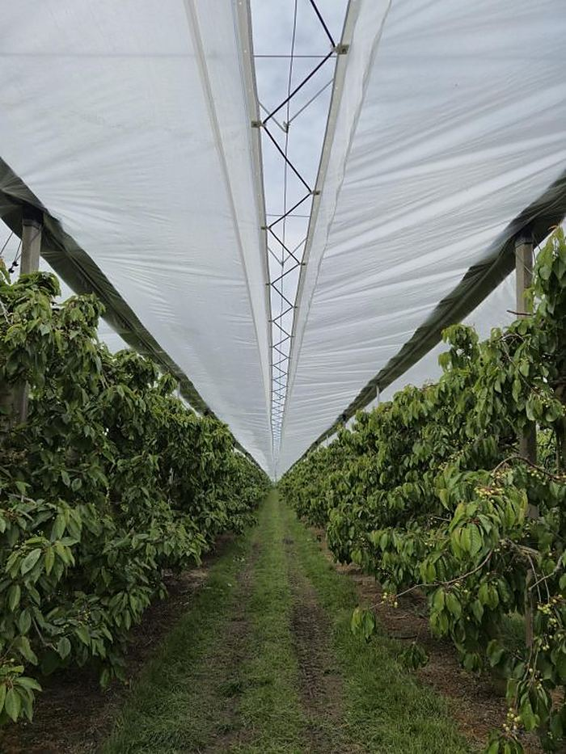
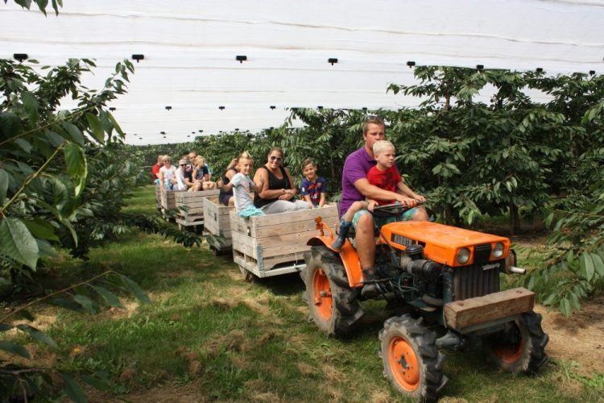

Zo ziet je werkdag eruit
Het kersenseizoen begint half juni en eindigt begin augustus. De kersen worden met de hand geplukt en gesorteerd.
Je werkt van 07.00 tot 13.00 uur. Door het weer kunnen de tijden wel eens veranderen, maar dat gaat altijd in overleg. Je wordt per kist betaald, dus je hebt zelf veel invloed op wat je verdient.
Half juni – begin aug.de plukperiode
07.00 – 13.00 uurin overleg bij slecht weer
Per kist betaaldhoe meer je plukt, hoe meer je verdient
Vanaf 15 jaarminimaal 3 weken achter elkaar

Aanmelden
- Check de voorwaardenJe bent minimaal 15 jaar, hebt een geldig identiteitsbewijs en kunt minimaal 3 weken achter elkaar werken.
- Stuur je aanmeldingVul het aanmeldformulier volledig in en stuur een kopie van de voor- en achterkant van je ID of paspoort mee.
- Vragen?Twijfel je ergens over? Bel of app ons gerust.
Plukken in onze eigen boomgaard
Je plukt in onze eigen boomgaard in Heijningen, vlakbij Willemstad. Negen rassen worden na elkaar rijp, dus er is het hele seizoen werk.
Meer over onze kersenKom langs in het kersenseizoen
De winkel is nu dicht. Begin juni 2027 zijn we er weer met de eerste kersen.
Zuylenhoeve
Een vraag? Bel, app of mail ons gerust.
Openingstijden
Gesloten tot begin juni 2027
| Maandag t/m vrijdag | 10.00 – 17.30 |
| Zaterdag en zondag | 10.00 – 16.30 |
Tijdens het kersenseizoen.
Onze kersen zijn in het seizoen ook elke dag te koop bij De Bosrand, Antwerpseweg 30A in Rijsbergen.